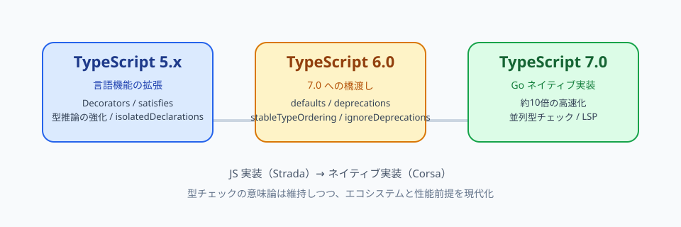

TypeScript / バージョン移行
TypeScript 5→6→7で起きる（起きるであろう）インパクト
TypeScript 5.x は「型システムと言語機能を伸ばす時代」、6.0 は「7.0 ネイティブ実装へ渡す橋渡し」、7.0 は「Go 実装による性能革命とエコシステムの現代化」です。コードの書き方そのものより、設定・ビルド・エディタ体験・レガシー互換の整理が主戦場になります。
簡潔なQ&A
- Q. 3世代を一言ずつで言うと？
- A. TS5＝言語機能と型推論の拡張。TS6＝7.0 向けの設定整理と deprecations の橋渡し。TS7＝Go ネイティブ実装による約10倍の高速化と、並列型チェック前提の設計。
- Q. 実務で一番インパクトが大きいのは？
- A. TS5 では型推論の改善や
isolatedDeclarationsなどライブラリ作者向けの変化。TS6/7 ではtsconfig.jsonのデフォルト変更（strict、types、rootDirなど）と、レガシー設定・モジュール解決の廃止が最大です。 - Q. いつ移行を始めるべき？
- A. まず TS6 で
ignoreDeprecationsなしに通る状態を作る。性能が課題なら@typescript/native-preview（tsgo）で TS7 を並行検証。typescript-eslint など API 依存ツールは TS7.1 以降の安定 API を待つ選択肢もあります。 - Q. tsgo は今使える？「7を待つ」話は何？
- A. 型チェックだけなら tsgo は今から使える（ベータ）。eslint・jest・カスタム transformer など
import typescriptするツールは TS7.0 では API が未安定のため TS6 を残し、TS7.1 以降を待つ、という二段構えが現実的です。

全体像：設計思想の転換
Microsoft は TS6 を「JavaScript 実装（内部コードネーム Strada）の最終系」、TS7 を「Go ネイティブ実装（Corsa）」と位置づけています。型チェックの意味論（semantics）は維持しつつ、以下の前提でエコシステムを整理します。
- ランタイムはほぼ evergreen。ES5 向け出力の需要は消滅に近い。
- 新規プロジェクトのモジュール形式は ESM + バンドラーが主流。
tsconfig.jsonは事実上の標準。暗黙推論より明示設定を優先。- 型の厳密さ（
strict）への需要は増加。 - 大規模コードベースではビルド性能が最優先課題。性能と両立しないオプションは廃止方向。
つまり TS5→7 は「新しい型構文を覚える」より、「プロジェクト設定とツールチェーンを現代化する」移行です。
TypeScript 5.x（5.0〜5.9）：言語機能と型推論の拡張期
TS5 系は JS 実装のまま、ECMAScript 追随と型システムの改善を積み上げた世代です。破壊的変更は比較的少なく、書き方の選択肢が増える方向が中心です。
5.0：標準準拠とライブラリ作者向け機能
- Decorators：Stage 3 ECMAScript 準拠のデコレータ。クラス・メソッドの横断関心事を標準構文で書ける。
consttype parameters：推論結果をリテラル型として固定。設定オブジェクトや tuple 推論の精度向上。moduleResolution: "bundler"：Vite 等のバンドラー前提の解決戦略。verbatimModuleSyntax：型 import/export を実行時に確実に消す。ツリーシェイキングと整合。satisfies：型を満たしつつ推論結果を保持（4.9 から継続）。
5.1〜5.4：日常 DX の改善
- JSX の型チェック分離、getter/setter の型独立性、JSDoc タグ拡張（5.1）。
using宣言（Explicit Resource Management）、デコレータ metadata（5.2）。import typeの side-effect import 整理、switch (true)の narrowing（5.3）。NoInfer<T>、Object.groupBy/Map.groupBy型（5.4）。
5.5〜5.9：型推論の深化とビルド向け機能
- 推論される type predicate（5.5）：
filter後の配列型が自動で絞り込まれる。 isolatedDeclarations（5.5）：宣言ファイル emit をファイル単位で独立可能に。TS7 の並列ビルドと相性が良い。- 正規表現の構文チェック、常に nullish/truthy な条件の検出（5.5〜5.6）。
- 相対 import の拡張子書き換え（
--rewriteRelativeImportExtensions、5.7）。 - deferred imports、最小
tsconfig（5.9）。
TS5 世代の実務インパクト
| 対象 | 影響 |
|---|---|
| アプリ開発者 | 新構文の任意採用。satisfies、推論 predicate、Decorators などで型安全な書き方が増える。 |
| ライブラリ作者 | isolatedDeclarations、const type parameters、declaration emit の品質要求が上がる。 |
| 設定 | moduleResolution: bundler への移行が進む。破壊的変更は限定的。 |
TypeScript 6.0：7.0 への橋渡しリリース
TS6 は「最後の JS 実装メジャーリリース」です。新機能もありますが、本質は7.0 で hard error になるものを先に警告し、移行時間を確保することです。
6.0 の新機能（7.0 以外の価値）
- this-less 関数の推論改善：メソッド短縮構文でも arrow 関数と同等の推論。バグ検出が増える場合あり。
#/subpath imports：Node.js のimports: { "#/*": "./dist/*" }に対応。--stableTypeOrdering：7.0 の決定論的型順序と揃える診断用フラグ（最大25%遅くなる）。- Temporal / RegExp.escape / Map.getOrInsert など ECMAScript 2025 追随。
lib: ["DOM"]に iterable が統合：dom.iterable不要に。
デフォルト値の変更（影響大）
| オプション | 5.9 まで | 6.0 以降 | 実務での症状 |
|---|---|---|---|
strict |
false |
true |
新規プロジェクトで strict エラーが増える |
module |
commonjs 等 |
esnext |
emit 形式が変わる |
target |
固定世代 | 最新安定 ES（現状 es2025） |
出力 JS の世代が上がる |
types |
@types/* 全自動 |
[]（空） |
process、describe 等が見つからない。ビルド20〜50%改善の可能性 |
rootDir |
入力ファイルから推論 | tsconfig.json のディレクトリ |
dist/src/index.js のような出力ずれ |
noUncheckedSideEffectImports |
false |
true |
副作用のみ import の typo 検出 |
libReplacement |
true |
false |
watch 時の不要な解決が減り性能改善 |
6.0 で deprecated（7.0 で hard error）
target: es5、downlevelIterationmoduleResolution: node/node10/classic→nodenextまたはbundlermodule: amd/umd/systemjs/none→esnext/preserve+ バンドラーbaseUrl→pathsにプレフィックスを明示esModuleInterop: false、allowSyntheticDefaultImports: falsealwaysStrict: false、outFilemodule Foo {}名前空間構文 →namespace Foo {}- import
asserts→with（import attributes） /// <reference no-default-lib="true" />tsconfig.jsonがあるのに CLI でファイル指定 → エラー（--ignoreConfigで回避）
移行猶予："ignoreDeprecations": "6.0" を設定すると警告を抑制できますが、TS7 では使えません。自動修正には ts5to6 コデモッドもあります。
TypeScript 7.0：Go ネイティブ実装（Corsa）
TS7 はコンパイラ本体を Go に移植したリリースです。ゼロから書き直しではなく、既存実装のメソッドical portで、型チェックロジックは TS6 と構造的に同一とされています。
性能とアーキテクチャ
- 約10倍の高速化：VS Code 規模で 77.8s → 7.5s など（公式ベンチマーク）。
- エディタ起動：プロジェクトロード 9.6s → 1.2s 程度。
- メモリ使用量：おおよそ半減。
- 並列型チェック：
--checkers（デフォルト4）、プロジェクト参照は--builders。 - 決定論的型順序：
stableTypeOrderingが常時 ON。並列化に伴う union 順序の非決定論を排除。 - LSP ベース：Language Server Protocol 上のエディタ体験。
導入方法（2026年5月時点）
# ベータプレビュー（安定版は typescript パッケージ名に統合予定）
npm install -D @typescript/native-preview@beta
npx tsgo --version
# VS Code 拡張: TypeScript Native Preview
# TS6 と並行: npm install -D typescript@npm:@typescript/typescript6安定版 TS7 の tsc は typescript パッケージ名に戻る予定。現状は tsgo と tsc6 で共存検証する設計です。
tsgo とは何か — 「7を待つ」話の整理
tsgo は TypeScript 7（Go ネイティブ実装）の CLI エントリポイントです。ベータ期間中は @typescript/native-preview パッケージに入り、安定版 TS7 リリース後は typescript パッケージの tsc に統合される予定です。つまり tsgo ≒ 将来の tsc（TS7 版） と考えてよいです。
今すぐ使えるもの / 待つもの
| 用途 | tsgo（TS7）で今できる？ | 備考 |
|---|---|---|
tsc --noEmit 型チェック |
◎ ベータから可能 | 大規模リポジトリでも実用例あり。CI の shadow check に向く |
| VS Code エディタ体験 | ◎ Native Preview 拡張 | 補完・定義ジャンプ・ホバー等。LSP ベース |
tsc による emit（.js / .d.ts 出力） |
◎ 概ね可能 | JS からの .d.ts emit は parity 作業中 |
--watch |
△ 改善中 | ベータ時点では増分 recheck が未完成。安定版前に改善予定 |
import typescript するツール |
✗ TS7.0 では不可 | typescript-eslint、ts-jest、ts-node、カスタム transformer、言語サービス plugin 等 |
| Programmatic Compiler API | ✗ TS7.1 以降 | Microsoft 公式：安定 API は 7.0 から数か月後の 7.1 以降 |
聞いた「7を待って正式利用」は、おそらくエコシステム全体を TS7 に乗せ替える話です。型チェックだけなら tsgo を今から試せますが、typescript パッケージを peer dependency に持つ周辺ツールは TS7.1 の安定 Compiler API まで TS6 を残す、という二段構えが現実的です。
Microsoft 推奨の共存パターン
TS7 Beta 公式ブログでは、移行期間中は次の構成を想定しています。
- 型チェック・ビルド：
@typescript/native-previewのtsgo（将来はtypescriptのtsc） - API 依存ツール：
typescript@npm:@typescript/typescript6で TS6 を alias インストールし、tsc6やimport typescriptを維持
# package.json 例（npm alias）
{
"devDependencies": {
"typescript": "npm:@typescript/typescript6@^6.0.0",
"@typescript/native-preview": "beta"
},
"scripts": {
"typecheck": "tsgo --noEmit",
"typecheck:legacy": "tsc6 --noEmit"
}
}pnpm なら pnpm.overrides で typescript を 6.x に固定しつつ、ルートに @typescript/native-preview を devDependency として足す、という運用も PostHog 等の大規模リポジトリで採用されています（shadow type-checker パターン）。
shadow type-checker パターン（今すぐ tsgo を活かす）
「全部 TS7 に乗せ替えられないが、CI の型チェックだけ速くしたい」場合の定番です。
- 本番ゲートは従来どおり
tsc --noEmit（TS6）を維持 - 並行して
tsgo --noEmitを CI に追加（最初はcontinue-on-error: trueでも可） - 差分が出たら型注釈を足す等で両方 green に揃える
- 安定したら tsgo を本番ゲートに昇格、TS6 は API 依存ツール用に残す
tsgo は tsc6 と意味論を揃えている設計ですが、並列型チェックや union 順序の違いで稀に差分が出ることもあります。公式の --stableTypeOrdering（TS6）や明示的な型注釈で揃えるのが定石です。
typescript-eslint はなぜ待つ？
typescript-eslint は内部で typescript パッケージの Program API（AST 走査・型情報取得）に依存しています。TS7 の Go 実装は CLI / LSP は完成度が高い一方、JavaScript から呼べる Compiler API は TS7.1 以降と Microsoft が明言しています。さらに Go/WASM 経由で AST・型情報を JS 側に渡す設計も typescript-eslint 側で検討中です。
実務的には：
- 今：eslint は TS6 の typescript-eslint のまま。型チェックだけ tsgo
- TS7.0 安定：
typescriptパッケージが tsgo ベースのtscになるが、eslint 系は alias で TS6 維持が必要な場合が多い - TS7.1+：Compiler API 安定後、typescript-eslint が tsgo 対応 → ようやく「全部 TS7」に近づく
tsgo コマンドの要点
tsgo --version— バージョン確認tsgo --noEmit— 型チェックのみ（tsc 互換）--checkers N— 並列型チェッカー数（デフォルト 4）。メモリとトレードオフ--builders N— プロジェクト参照の並列ビルド数--singleThreaded— デバッグ・比較用に単一スレッド強制
TS6 の tsc と同じ tsconfig.json を読みます。TS6 で ignoreDeprecations なしに通る設定が、tsgo でも前提になります。
TS7 固有の追加・変更インパクト
- 6.0 の deprecations がすべて hard error：
ignoreDeprecations不可。 - JavaScript サポートの整理：Closure 互換 JSDoc の特殊扱いを縮小。
.tsと分析を揃える方向。@enum、postfix!、Closure 風関数型など非推奨- 型位置に値を書けない →
typeofを使う
- Programmatic API：TS7.0 時点では未安定。typescript-eslint・ts-jest 等は TS7.1 以降の安定 API を待つ。型チェックだけなら tsgo は今から使える。
- watch モード：ベータ時点では増分 recheck が未完成。安定版前に改善予定。
- 宣言ファイル emit：JS ファイルからの .d.ts は parity 作業中。
世代別インパクトまとめ
| 観点 | TS 5.x | TS 6.0 | TS 7.0 |
|---|---|---|---|
| 主目的 | 言語機能・型推論の拡張 | 7.0 への移行準備 | ネイティブ性能・並列化 |
| コード変更 | 任意採用が多い | 推論差分でエラー増の可能性 | TS6 対応が前提。JS プロジェクトは JSDoc 見直し |
| 設定変更 | 小〜中 | 大（defaults + deprecations） | 6.0 設定がそのまま必須 |
| ビルド時間 | 漸進的改善 | types: [] で20〜50%改善例 |
約10倍高速化 |
| ツール連携 | 問題少 | codemod 利用可 | API 依存ツールは段階的移行 |
推奨移行ステップ
- TS 5.9 最新に上げ、strict 系オプションを明示する。
- TS 6.0へ。
typesとrootDirを先に直す（最多トラブル源）。 - deprecation 警告を
ignoreDeprecationsなしで解消。 - CI で
tsgo --noEmitを shadow 実行 → 問題なければ本番ゲートへ。API 依存ツールは TS7.1 まで TS6 alias を維持。
よくある誤解
- 「TS7 で型システムが変わる」 → 基本は同じ。変わるのは主に性能・並列化・レガシー廃止。
- 「TS6 はスキップできる」 → 7.0 の breaking changes は 6.0 で予告されたもの。6.0 を飛ばすと一気に修正量が増える。
- 「stableTypeOrdering は常時使うべき」 → 6.0 では 6↔7 diff 診断用。7.0 では常時 ON で選択不可。
- 「types: ["*"] で全部戻せば OK」 → 動くが性能メリットを捨てる。必要な
@typesだけ列挙するのが推奨。
要点
TS5 は「書ける・推論される」が伸びた世代。TS6 は「現代の JS エコシステム前提に設定を揃える」橋渡し。TS7 は「同じ TypeScript を10倍速く」する世代です。tsgo は TS7 の CLI で、型チェックだけなら今から使えるが、eslint 等の Compiler API 依存は TS7.1 まで TS6 を残す二段構えが現実的。アプリ開発者は TS6 の tsconfig 変更が最優先です。